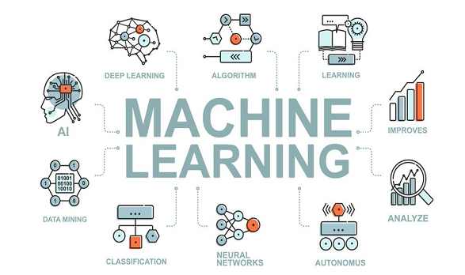
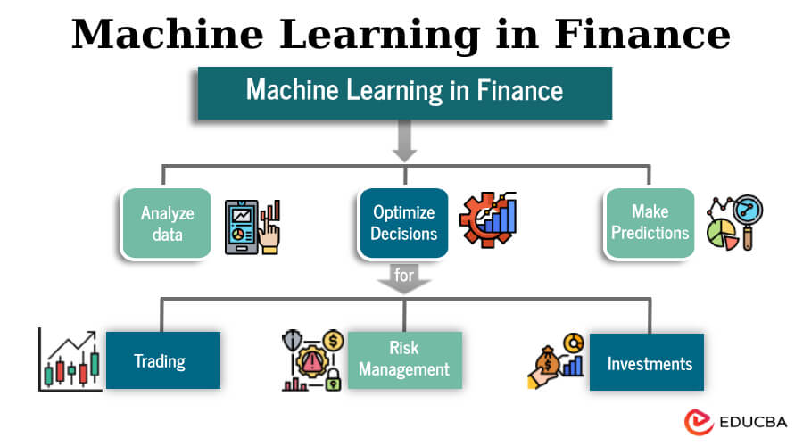

ACM Machine Learning Workshop¶
Unlock the Power of Data with Machine Learning¶
Welcome to the ACM Machine Learning Workshop, where curiosity meets computation. This workshop is your gateway into the fascinating world of Machine Learning (ML) — a field that empowers computers to learn from data and make intelligent decisions without being explicitly programmed.
About This Workshop¶
This 4-day workshop is designed to blend theory with hands-on practice. You'll explore essential ML concepts, clean and prepare real datasets, build models, and even experiment with deep learning and natural language processing.
Workshop Outline¶
| Day | Topic | Highlights |
|---|---|---|
| Day 1 | Data Cleaning & Feature Engineering | Handle missing data, create features, prepare datasets |
| Day 2 | Model Training & Analysis | Train, test, and evaluate key ML models |
1. What is Machine Learning?¶

Machine Learning is a branch of Artificial Intelligence (AI) that enables systems to identify patterns, make predictions, and improve automatically through experience. Unlike traditional programming where we explicitly code rules, ML allows computers to discover rules and patterns from data.
1.1 How Does Machine Learning Work?¶
Think of ML like teaching a child to recognize animals. Instead of giving them a rulebook with detailed descriptions, you show them many pictures of cats and dogs. Over time, they learn to identify the patterns that distinguish cats from dogs — pointy ears, whiskers, size, behavior, etc.
Similarly, ML systems: 1. Learn from data (training phase) 2. Identify patterns automatically 3. Make predictions on new, unseen data 4. Improve over time with more experience
Data --> ML Algorithm --> Model --> Predictions
1.2 Real-World Applications & Use Cases¶
Machine Learning is transforming industries and solving complex problems across diverse domains:
1.2.1 Entertainment & Media¶
- Netflix & Spotify: Personalized recommendations based on viewing/listening history
- YouTube: Content suggestions and automatic video categorization
- Gaming: AI opponents that adapt to player behavior
1.2.2 Healthcare & Life Sciences¶
- Disease Diagnosis: Early detection of cancer, diabetes, and heart conditions from medical images
- Drug Discovery: Predicting molecular behavior to accelerate pharmaceutical research
- Patient Monitoring: Predicting patient deterioration in ICUs
- Personalized Treatment: Recommending treatments based on genetic profiles

1.2.3 Finance & Banking¶
- Fraud Detection: Identifying suspicious transactions in real-time
- Credit Scoring: Assessing loan eligibility and risk
- Algorithmic Trading: Predicting stock market trends
- Customer Segmentation: Personalizing banking services

1.2.4 Transportation & Autonomous Vehicles¶
- Self-Driving Cars: Tesla, Waymo using computer vision and sensor fusion
- Route Optimization: Uber, Google Maps predicting traffic and suggesting routes
- Predictive Maintenance: Anticipating vehicle component failures

1.2.5 Manufacturing & Industry¶
- Quality Control: Detecting defects in production lines
- Predictive Maintenance: Preventing equipment failures
- Supply Chain Optimization: Forecasting demand and managing inventory
- Energy Optimization: Reducing power consumption

1.3 What Kind of Problems Can ML Solve?¶
Machine Learning excels at solving problems that fall into these categories:
1.3.1 Classification Problems¶
Assigning data into predefined categories
- Is this email spam or not spam?
- Is this tumor malignant or benign?
- Which animal is in this photo?
- Will this customer churn or stay?
Suggested Image: Classification visualization (e.g., scatter plot with different colored regions)
1.3.2 Regression Problems¶
Predicting continuous numerical values
- What will be the house price?
- How much will sales be next month?
- What temperature will it be tomorrow?
- What's the expected lifetime value of a customer?
1.3.3 Clustering Problems¶
Finding natural groupings in data
- Customer segmentation for targeted marketing
- Document organization and topic modeling
- Genetic sequence analysis
- Social network community detection
Suggested Image: Cluster visualization showing data points grouped into different clusters
1.3.4 Anomaly Detection¶
Identifying unusual patterns
- Credit card fraud detection
- Network intrusion detection
- Manufacturing defect identification
- System health monitoring
1.3.5 Recommendation Systems¶
Suggesting relevant items
- Movie/music recommendations
- Product suggestions
- Content personalization
- Friend suggestions on social media
1.3.6 Natural Language Processing¶
Understanding and generating human language
- Sentiment analysis (is this review positive or negative?)
- Machine translation
- Text summarization
- Chatbots and virtual assistants
Suggested Image: Word cloud or sentiment analysis visualization
1.3.7 Computer Vision¶
Understanding visual information
- Face recognition
- Object detection and tracking
- Medical image analysis
- Autonomous navigation
Suggested Image: Object detection example (image with bounding boxes and labels)
1.4 When NOT to Use Machine Learning¶
While ML is powerful, it's not always the right solution:
- When simple rules suffice: If you can solve it with if-else statements, you probably don't need ML
- When data is scarce: ML needs substantial data to learn patterns
- When interpretability is critical: Some ML models are "black boxes" (though this is improving)
- When the problem is well-understood: Traditional algorithms may be more efficient
1.5 The ML Workflow¶
Every ML project follows a similar journey:
- Problem Definition: What are you trying to predict or understand?
- Data Collection: Gather relevant data
- Data Preparation: Clean, transform, and engineer features (Day 1)
- Model Selection: Choose appropriate algorithms
- Training: Let the model learn from data (will be taught on Day 2)
- Evaluation: Measure performance on test data (will be taught on Day 2)
- Deployment: Put the model into production (will be taught on Day 4)
- Monitoring: Track performance and retrain as needed
2. Why Learn Machine Learning?¶
Machine Learning has become one of the most in-demand skills across industries. By understanding ML, you can:
- Turn data into actionable insights.
- Build intelligent systems that adapt and improve.
- Contribute to innovations in AI, automation, and analytics.
3. Resources & Next Steps¶
- Recommended reading and tutorials will be shared during the sessions.
- After the workshop, try applying what you've learned to a small end-to-end project.
- Questions? Feel free to ask during the sessions or reach out via the repository.
We hope you enjoy the workshop and gain valuable insights into the world of machine learning!